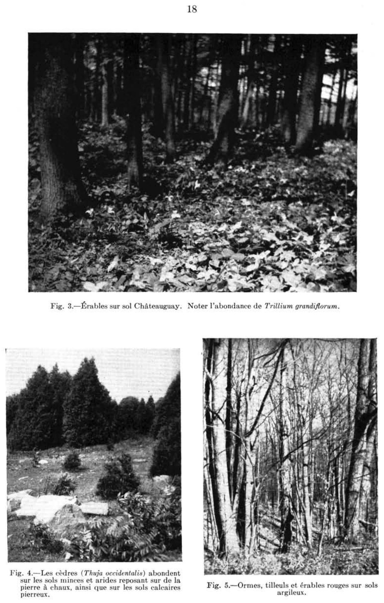

Identification & Caractéristiques Générales
La série La Pierre regroupe des sols minéraux développés sur un till morainique mince, grossier et non stratifié, ou sur un dépôt de transport glaciaquex reposant sur un substrat rocheux. Ce matériau parental d'origine morainique est généralement dominé par des fragments rocheux d'gneiss et de granites issus du Bouclier canadien. La morphologie de ces sols est intimement liée au modelé de la surface topographique, caractérisée par des reliefs accidentés, des pentes oscillant de modérées à fortes, ainsi qu'un microrelief fortement irrégulier marqué par des affleurements rocheux fréquents.
Le profil pédologique montre une différenciation morphologique nette, caractérisée par une texture variant de limono-sableuse à sablo-limoneuse en surface, avec une charge caillouteuse et pierreuse élevée dans l'ensemble du solum. Le drainage naturel de ces sols est généralement modéré à imparfait, influencé par la présence d'une compacité sous-jacente ou d'un contact lithique rapproché qui restreint la percolation verticale de l'eau. La réaction du sol est fortement à moyennement acide (pH généralement inférieur à 5,5), reflétant la nature minéralogique felsique du matériel parental et le faible taux de saturation en bases.
Les aptitudes agronomiques de la série La Pierre sont sévèrement limitées par la topographie accidentée, la pierrosité excessive, la faible profondeur effective du sol ainsi que le risque inhérent d'érosion hydrique sur les pentes. Ces contraintes restreignent considérablement l'utilisation de la machinerie agricole lourde et confinent la majeure partie de ces terres à la production de cultures fourragères permanentes ou à la sylviculture. L'exploitation agricole intensive nécessite des aménagements particuliers, incluant un travail du sol circonscrit pour limiter le dérangement des pierres, des apports réguliers d'amendements calciques et magnésiens pour corriger l'acidité, ainsi qu'une gestion rigoureuse des eaux de ruissellement pour mitiger l'érosion.
Classification Taxonomique & Environnement Pédologique
| Ordre Pédologique | Organique |
|---|---|
| Grand Groupe (SCSS) | Humisol terrique |
| Sous-Groupe Taxonomique | Humisol terrique |
| Famille Pédologique | Humique, ne s'applique pas, euique |
| Mode de Dépôt Parental | Marécage sur morainique |
| Classe de Drainage Naturel | Très mal drainé |
| Régime Thermique & Humidité | Doux / Aquique |
Description Morphologique du Profil Type
Description Morphologique du Solum
Aucune coupe pédologique chiffrée avec nomenclature détaillée des horizons n'a été publiée sous forme de tableau dans les mémoires originaux pour cette unité. Les rapports d'inventaire la définissent par son matériau d'origine (Marécage sur morainique), sa texture dominante (Matière organique humifiée) et sa classe de drainage naturel (Très mal drainé).
Profils Photographiques & Planches de Terrain
Documents iconographiques, figures pédologiques et coupes de terrain documentées dans les mémoires d'inventaire pour de la série La Pierre :

Propriétés Physico-Chimiques & Analyses de Laboratoire
Données Analytiques de Laboratoire
Aucune analyse physico-chimique quantitative de laboratoire (granulométrie par sédimentométrie, pH H₂O/CaCl₂, matière organique Walkley-Black ou bases échangeables) n'a été consignée pour cette unité dans les archives historiques numérisées ou les bases contemporaines EESSAQ/MAPAQ.
Particularités Régionales, Phases & Variantes Pédologiques
Déclinaisons régionales, faciès texturaux, phases d'érosion ou de pierrosité et variantes cartographiées par étude pour de la série La Pierre :
| Étude Régionale | Symbole | Appellation / Phase / Variante | Différenciation avec la série type (Analyse pédologique) |
|---|---|---|---|
| Étude pédologique des sols défrichés de l’Abitibi-Témiscamingue | Lr |
La Pierre argile limoneuse | Modalité modale de référence (type de base de la série). |
Lr-a |
La Pierre à texture argileuse | Faciès textural de surface argile (distinct du argile limoneuse de référence). | |
Lr-c |
La Pierre variante couche contrastante dans le profil argile limoneuse | Conforme à la série type de référence (caractéristiques texturales et drainage identiques). | |
Lr-h |
La Pierre argile limoneuse humifère | Phase humifère enrichie en matière organique superficielle. | |
Lr-hc |
La Pierre variante couche contrastante dans le profil argile limoneuse humifère | Phase humifère enrichie en matière organique superficielle. | |
Lr-l |
La Pierre à texture loameuse | Faciès à texture loameuse plus aérée et perméable que l'argile limoneuse de référence (travail du sol plus aisé et meilleur égouttement). | |
Lr-lc |
La Pierre variante couche contrastante dans le profil à texture loameuse | Faciès à texture loameuse plus aérée et perméable que l'argile limoneuse de référence (travail du sol plus aisé et meilleur égouttement). | |
Lr-lm |
La Pierre variante couche organique dans le profil et/ou sur dépôt organique à texture loameuse | Phase organique caractérisée par un recouvrement holorganique épais en surface; Faciès à texture loameuse plus aérée et perméable que l'argile limoneuse de référence (travail du sol plus aisé et meilleur égouttement). | |
Lr-o |
La Pierre organique | Phase organique caractérisée par un recouvrement holorganique épais en surface. | |
Lr-oc |
La Pierre variante couche contrastante dans le profil organique | Phase organique caractérisée par un recouvrement holorganique épais en surface. | |
Lr-s |
La Pierre à texture sableuse | Faciès sableux très filtrant et pauvre en éléments nutritifs vis-à-vis du argile limoneuse de référence. | |
Lr-sc |
La Pierre variante couche contrastante dans le profil à texture sableuse | Faciès sableux très filtrant et pauvre en éléments nutritifs vis-à-vis du argile limoneuse de référence. | |
| Comté de Chambly | LE |
Lapierre | Drainage très mal drainé (distinct du drainage de référence mal drainé); Classification sous-groupe : Humisol terrique (vis-à-vis de Gleysol orthique). |
| Comté de Laprairie | LE9 |
Lapierre humique | Drainage très mal drainé (distinct du drainage de référence mal drainé); Classification sous-groupe : Humisol terrique (vis-à-vis de Gleysol orthique). |
| Comté de Napierville | LE |
Lapierre | Drainage très mal drainé (distinct du drainage de référence mal drainé); Classification sous-groupe : Humisol terrique (vis-à-vis de Gleysol orthique). |
| Comté de Rouville | LE9 |
Lapierre humique | Drainage très mal drainé (distinct du drainage de référence mal drainé); Classification sous-groupe : Humisol terrique (vis-à-vis de Gleysol orthique). |
| Comté de Saint-jean | LE |
Lapierre humique | Drainage très mal drainé (distinct du drainage de référence mal drainé); Classification sous-groupe : Humisol terrique (vis-à-vis de Gleysol orthique). |
| Comté de Verchères | LE |
Lapierre | Drainage très mal drainé (distinct du drainage de référence mal drainé); Classification sous-groupe : Humisol terrique (vis-à-vis de Gleysol orthique). |
| Comté de St-jean | LPE |
La Pierre | Drainage très mal drainé (distinct du drainage de référence mal drainé); Classification sous-groupe : Humisol terrique (vis-à-vis de Gleysol orthique). |
Distribution Pédo-Paysagère & Représentativité Cartographique (Couverture PPS 2026)
- Verchères (VER) — co-occurrente dans 14 polygone(s)
- Boucherville loam (BCL) — co-occurrente dans 5 polygone(s)
- Saint-Jacques loameux grossier sur till loameux (SJA) — co-occurrente dans 3 polygone(s)
Aptitudes Agronomiques, Hydropédologie & Conservation des Sols
Indicateurs Hydropédologiques & Vulnérabilité à l'Érosion (BDHP 2026)
Interprétation BDHP : Potentiel de ruissellement modérément élevé. Faible taux d'infiltration, présence d'horizons ralentissant le drainage descendant.
Classement selon l'Inventaire des Terres du Canada (ITC / CLI) : Classe 4w / 5w (Classe O).
- Potentiel agricole : Terroir adapté aux cultures régionales selon la texture dominante et la régie de drainage.
- Contraintes majeures : Très mal drainé. Risque d'engorgement temporaire ou d'excès d'eau printanier.
- Gestion & Aménagement : Drainage souterrain ou superficiel préconisé sur les terres planes. Chaulage et apport organique régulier selon les bilans agronomiques.
- Cultures adaptées : Grandes cultures (maïs, soya, céréales), prairies fourragères et cultures maraîchères selon le contexte géomorphologique.